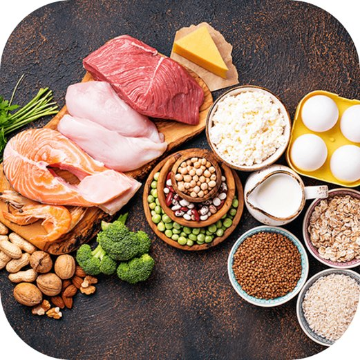
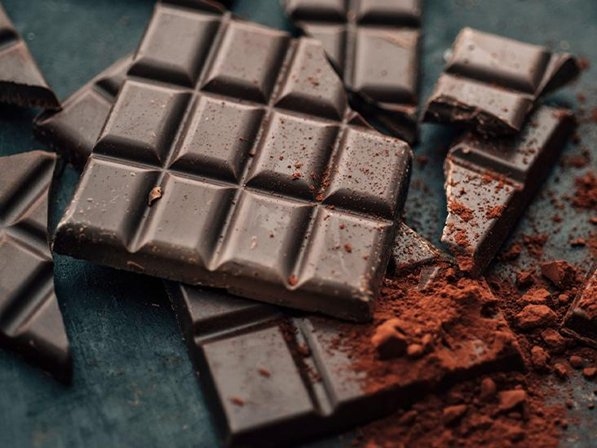

Nên ăn những gì?
Rau lá xanh đậm
Cải bó xôi, bông cải xanh, rau muống... giàu sắt giúp bù lại lượng máu mất. Ăn kèm thực phẩm giàu vitamin C để hấp thu sắt tốt hơn nhé!
Cá hồi, cá thu, cá ngừ
Giàu omega-3 có tác dụng chống viêm tự nhiên, giúp giảm co thắt tử cung và đau bụng kinh hiệu quả.
Socola đen (>70% cacao)
Giàu magie — khoáng chất giúp thư giãn cơ bắp và giảm đau. Socola đen cũng kích thích não tiết endorphin giúp bạn vui hơn 🍫
Trái cây berry
Việt quất, dâu tây, mâm xôi... giàu antioxidant giúp giảm viêm và đau. Vừa ngon vừa lành!
Trứng, đậu phụ, các loại đậu
Protein giúp duy trì năng lượng ổn định, không bị mệt mỏi trong những ngày này. Đậu phụ còn chứa isoflavone giúp cân bằng hormone nhẹ.
Trà thảo mộc ấm
Trà gừng, trà hoa cúc, trà bạc hà — đều có tác dụng làm ấm, giảm co thắt và thư giãn cơ. Uống thay thế nước lạnh trong những ngày này nhé!

🚫 Nên tránh những gì?
- ❌ Cà phê và đồ uống chứa caffeine — làm co mạch máu, tăng căng thẳng và có thể làm đau nặng hơn
- ❌ Đồ lạnh và nước đá — kích thích co thắt, làm đau bụng tệ hơn đáng kể
- ❌ Đồ ăn nhiều muối — gây giữ nước, phù nề, khó chịu
- ❌ Đồ ăn cay nóng quá mức — kích thích ruột, có thể làm đau bụng lan rộng hơn
- ❌ Đồ uống có gas, rượu bia — gây đầy hơi và ảnh hưởng xấu đến hormone
Ghi nhớ nhỏ từ Care Box
Bạn không cần thay đổi cả chế độ ăn ngay — chỉ cần chú ý một chút trong những ngày đặc biệt này là cơ thể đã cảm ơn bạn nhiều rồi đó!
Và nhớ nhé — nếu đang ở trường mà kỳ về bất ngờ, hộp Care Box trong nhà vệ sinh nữ luôn sẵn sàng "cứu trợ" bạn!